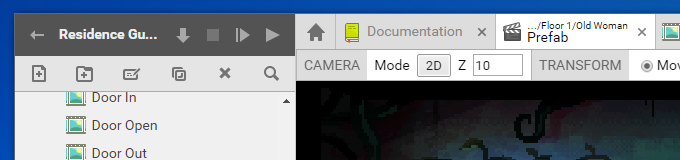
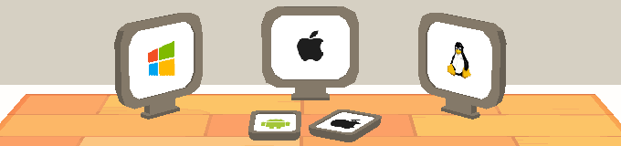

Superpowers
v0.19.0 — Windows, OS X, Linux
Free. Funded by your donations
Latest news and upcoming events
| January 29 - 31, 2016 | The Global Game Jam is happening. Take part with the community! |
|---|---|
| January 14th, 2016 | New release: v0.19.0 — A week of Open Source. Also new: Superpowers LÖVE v0.1 — First release! |
| January 8th, 2016 | v0.18.1 — Hotfix for scripting! has been released to fix a major bug. |
| January 7th, 2016 | Here we go: v0.18.0 — The first Open Source release! |
| January 6th, 2016 | We are now on Patreon! Check out our crowdfunding video. |
Subscribe to the newsletter for big news. At most one email a month.


Discover Superpowers
Superpowers's tabbed interface is easy to use and familiar.
Play the Discover Superpowers demo game.
Game logic with TypeScript

The TypeScript editor comes packed with useful features: syntax highlighting,
autocompletion, live error reporting, quick jump to definition and more.
Free asset packs

Superpowers comes with hundreds of individual assets,
including sprites, 3D models, sound effects, fonts and music!
Publish to any platform
Superpowers games can be published on PC, Mac, Linux, iOS and Android.
And of course, they run in recent Web browsers too!
Examples and demo projects

We've built a library of games to get you started.
Download tons of ready-to-use projects on GitHub.
Support us on Patreon

We've been pouring our hearts and souls into Superpowers since late 2014.
Please consider supporting our work with a subscription on Patreon. Thanks! :)